This is a list of release notes for Alpha Anywhere 4.2.0 to verify/move into the help system. The following directories are associated with this file: "Alpha_4.3.2_ReleaseNotes_files"
As this content is moved into the help system, please delete it from this file.
Guidelines:
| UX Component - List Control | Tutorial - Building a PhoneGap Application to Capture Images and Audios while Disconnected from the Network |
A common requirement when building mobile
applications is to capture data that includes
photos and audio recordings. The application
must work while offline and then be able to
synchronize the data and the media files
(photos, audios, videos) when a connection is
available. In order to implement this
application it is necessary to use PhoneGap. Note: Because PhoneGap is used the, data that are captured includes the filenames of pictures, rather than the base64 data for each picture. As a result many more images can be captured while the device is offline than would be possible if images were captured as base64 encoded data. In this video we show how a UX component with a List/Detail View is configured to capture data and media files and then sync with a server. Watch Video - Part 1 - Configuring the Data Source Watch Video - Part 2 - Configuring the List control and its associated Detail View Watch Video - Part 3 - Configuring the List control and its associated Detail View Watch Video - Part 4 - Configuring the List control and its associated Detail View Watch Video - Part 5 - Configuring the List control and its associated Detail View Watch Video - Part 6 - Running the app on a Device (Note: This is a large video file. It will take some time to download) Download Component (Note: See the component's 'PhoneGapDefaultSettings' property for a list of plugins that the PhoneGap app should use) Date added: 2016-06-05 |
| Reports | HTML-Paged Output Option |
When you render reports in a Web application you
can choose whether the report should be rendered
as PDF or HTML. The HTML option is only
available for Layout Table reports - not
Freeform reports. The HTML-Paged option will work with all report types -- Freeform and Layout Table and can be rendered in any browser (including mobile device browsers that do not have the ability to render PDF files. This video contrasts the different report output options. Watch Video Date added: 2016-06-10 |
| UX Component - ViewBox Control | Dynamically Setting Data Displayed in the ViewBox |
The ViewBox control is often used as a very
light weight alternative to the List control
when all you need is a scrollable list of data
and not the full functionality of a List. When used as an alternative to the List, a common pattern is to populate the data shown in the ViewBox dynamically, based on some search criteria entered by the user. In this video we show two different techniques for doing this. Watch Video - Part 1 Watch Video - Part 2 Download Component Date added: 2016-06-10 |
UX Component - Video Recording - PhoneGap Applications - It is now possible to add video recording to your PhoneGap applications. Video recording will work in disconnected application. You can record as many videos as you want, and then when you sync you data with the server, the video files can be uploaded to the server. In this respect, syncing video files is identical to the way pictures and audio recordings are synced when the user has an internet connection.
When you sync data on your mobile device you can specify that media files (pictures, audio recordings and videos) should be uploaded to Amazon S3, rather than the Alpha server. Since media files can be quite large, uploading media files to S3 is often preferable to uploading these files to an Alpha server.
To support video recording a playback, two new UX controls are available:
The Video Player control is used when you only want to allow users to play back previously created video files. The Video Recorder/Player control will allow playback of previously created videos and recording of new videos.
To add a Video Player or Video Recorder/Player control to your UX component select the [More...] option in the list of Data Controls.
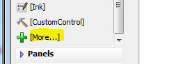
Both the Video Player and Video Recorder/Player controls are standard 'data controls'. This means that they have .setValue() and .getValue() methods, like all other data controls.
The .setValue() method is used to set the control to the URL of a video file.
The .getValue() method is used to read the current value of the control.
For example, in a PhoneGap application, after you end a video recording, if you called the .getValue() method for the control, the filename of the video that had just been recorded would be returned.
You can also convert the type of an existing control to a Video Player or Video Recorder/Player control by clicking on the smart field in the Control type prompt.
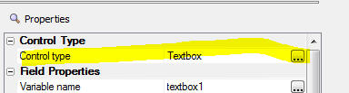
In the image below, the Video Player control is shown. Since the Player does not support recording, the control is not limited to applications that are running under PhoneGap.
The VCR buttons allow you to start, pause and resume playback. The fast forward and back buttons behave as follows:
The double sided arrow icon at the right edge will allow you to switch into full screen mode.
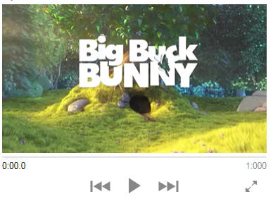
The control also shows a progress indicator and how long the video has been playing
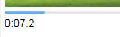
The appearance and behavior of the Video Recorder/Player control is essentially the same as the Video Player control, except that the Recorder/Player control include a button to switch from Playback mode to record mode:
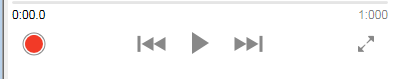
Configuring the Video Recorder/Player and Video Player Controls
To configure the Video controls, click the smart field for the Control Properties property.
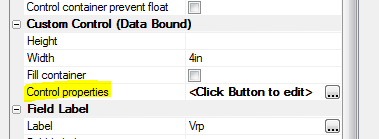
The Properties dialog for the Video Recorder/Player controls is shown below.
You can set the maximum allowed length (in seconds) of the video and you can specify code for the various events that the control fires.
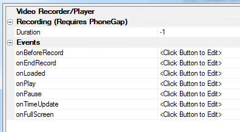
How to Configure a PhoneGap Application To Support Video Recording/Playback
Let's assume you want to build a PhoneGap application that will allow users to enter/edit data and record videos. The application must work offline and when a connection is available the data must be synced to a SQL database on the server and the videos must be uploaded to S3.
This tutorial will highlight the key configuration settings you will need to make as you build the UX component.
Let's assume that the underlying schema of the table in which data must be stored is as follows
If the videos are being uploaded to Amazon S3 when data are synced, the videofilename field will contain values like:
http://alphamediacapture.s3.amazonaws.com/video1.MOV
On the other hand, if the video are being uploaded to the Alpha server, the videofilename field will contain values like:
videofiles/video1.MOV
(assuming that the video files are uploaded to a folder called 'videofiles' in the Webroot).
Step1 - Create a UX control with a List/Detail view showing data from the SQL table. You can use the List Control Quick Setup genie to quickly create the List/Detail view.
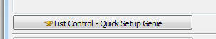
Step 2 - Configure the fields in the List. After you have created the List you must edit the List and on the Fields tab, set the control type of the videoFilename field to Video.
In addition, if the video files are going to be uploaded to the Alpha server (as opposed to Amazon S3) you will also need to specify the folder on the Alpha server where the video files should be stored. To do this, click the smart field for the Video capture and storage properties.
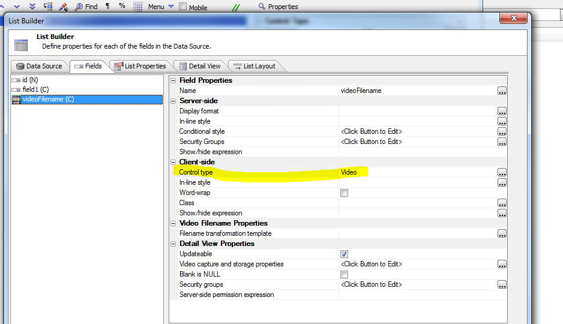
The Video Capture Properties dialog is shown below. The Upload folder is where you specify the folder name.
For example, if you specify:
myVideos
The videos will be stored in a folder called myVideos that is relative to the Webroot. It is recommended that you specify a folder that is relative to the webroot. This will allow you to upload videos from the server to the device for storage in the device's file system so that videos are available for playback on your device even when you have no internet connection.
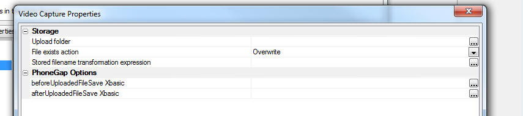
In addition to specifying the Upload folder you should also specify the Stored filename transformation expression. This property defines what gets stored in the videofilename field in the database. The builder for this property allows you to use 2 special placeholders: <Filename> - the fully qualified video filename, and <ShortFileName> - the name of the video file with no drive and path information.
You will typically want to store a filename that is relative to the Webroot. For example, if the Upload folder was set to myVideos then you should set this property to:
"myVideos/<shortFileName>"
With this setting, the actual data stored in the vidoefilename field in the database will look something like this
myVideos/video1.MOV
NOTE: If your videos are being uploaded to Amazon S3, it is not necessary to specify Video Capture Properties.
Step 3 - Specify if media files (pictures, audios and videos) should be uploaded to the Alpha server or Amazon S3 when data are synced.
To do this, edit the List properties and go to the Detail View tab. Then click the smart field for the Media files (photos, videos, audio recordings, other) settings property.
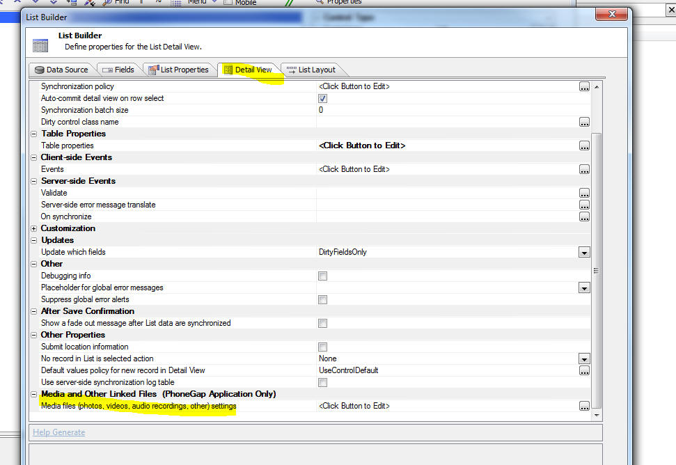
This dialog will allow you to specify if media files are uploaded to the Alpha server or to Amazon S3.
The dialog will also allow you to specify if media files should be downloaded to the device when data are loaded into the List control. If you download media files to the device the media files are stored in the file system on the device and will be available even when there is no connection.
Step 4 - Set the control type for the videoFilename control in the List's Detail View to a Video Recorder/Player control. When the List Quick Setup Genie created the List's Detail View, it set the control type of the videoFilename field to a textbox. To change the control type to a Video Recorder/Player, click the Control type smart field and select the Video Recorder/Player control.
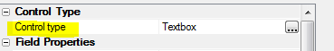
Having configured the List control and its Detail View, you are now ready to build your PhoneGap application.
TIP: To see a list of PhoneGap plugins that you
should enable when you build your PhoneGap application, download the
sample component using the link shown below and then examine the setting
in the component's PhoneGap
default settings property.
Download Component
Grid, UX and Tabbed UI Component - Reports - HTML-Paged Output Option - A new option (HTML-Paged) is available for how reports should be rendered in web applications.
When you use Action Javascript to display a report, or you add a Report to a Tabbed UI, or you embed a report into a UX component, the output options are now:
The PDF Option
The PDF option will render the report as a PDF file using the bundled Amyuni PDF printer driver. The PDF file will then be displayed in your browser (in a window in the component, a tab pane in the Tabbed UI or in a div on the current page). The manner in which the PDF will be displayed depends on the browser you are using. For example, if you are using IE, the Adobe Acrobat PDF viewer is used as IE does not have a built-in ability to render PDF files. Chrome and Firefox, on the other hand, have a built in ability to render PDF files, so the Acrobat reader is not used.
Unfortunately, the situation on mobile devices is more complicated because on many mobile devices there is no option to render PDF files in a browser.
When you choose the PDF option, the resulting report is properly paginated and is ready for printing, should the user want to print the displayed report.
The PDF option works with both type of Alpha Anywhere reports: Freeform and Layout Table.
The HTML Option
The HTML option will render the report as HTML. This option does not use the Amyuni PDF printer driver. However, this option is only available for Layout Table reports. The advantage of Layout Table reports over Freeform reports is that they render much more quickly than Freeform reports, and they can be exported to Excel with very high fidelity (because the cells in the Layout Table report can be directly mapped to cells in the Excel spreadsheet). The HTML produced by this option is not paginated. The report does not render any Page Headers, Page Footers, or page breaks defined in the report. When the HTML is printed, the page breaks are controlled by the printer -- i.e. a new page is started when the current page is full.
The HTML-Paged Option
The new HTML-Paged output option can be used for both Freeform and Layout Table reports. This output option does not use the Amyuni printer driver, but unlike the HTML option, the report is properly paginated and all Page Header, Footers and breaks defined in the report are honored. When the output from the HTML-Paged report is printed, the printout is properly paginated -- just like the output from the PDF option.
Since the output from HTML-Paged option is pure HTML (technically it is HTML with embedded SVG), no special plugins or viewers are needed by the browser. This means that the reports will render in all mobile browsers (unlike the PDF output option).
When you display a report in your web application the uses the HTML-Paged output option, the display window has buttons that allow you to create a PDF version of the report, to print the HTML, to export to Word, or to export to text.
Another benefit of the HTML-Paged output option is the way image with an Alpha channel (images with transparent backgrounds) are rendered. The HTML-Paged option will render these images correctly, while the PDF option (which uses the Amyuni printer driver) will not render these images correctly.
A5ws_SaveValidateUser() Function - A bug was introduced in build 3633 that broke the A5ws_SaveValidateUser() function.
Grid Component - Export to Excel - Computed Fields - If a computed field in the SQL SELECT statement for the grid contained a colon in the field expression, the field was not exported to Excel.